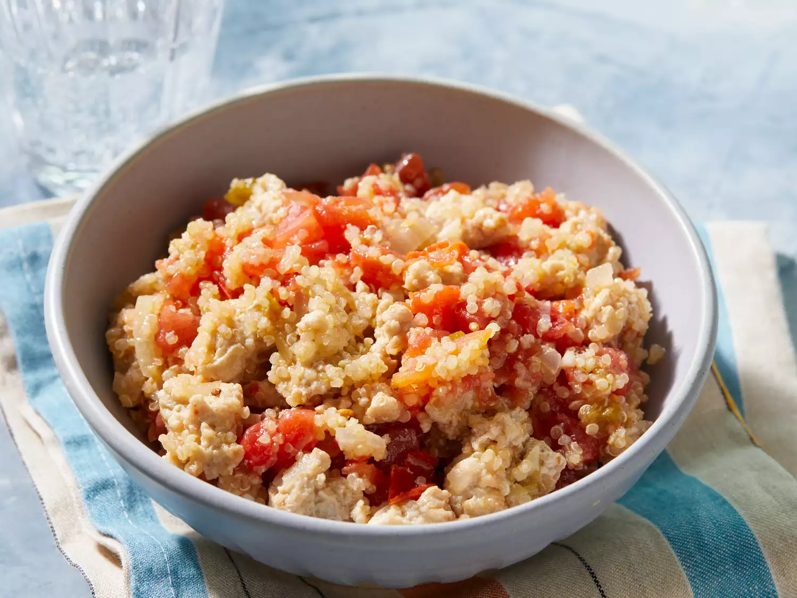

A healthy, high protein and on spot
Super easy to make, very healthy, high protein and definitely hits the spot. I'm always looking for new ways to prepare ground chicken. I'll be making this one often," says Allrecipes Allstar France C.
This chicken and quinoa recipe is incredibly easy, delicious, and spicy! Taste-test approved by a very picky 3-year-old.
Ingredients
- 2 cups chicken broth
- 1 cup quinoa
- 2 teaspoons vegetable oil, or as needed
- ½ onion, chopped
- 2 cloves garlic, or to taste, minced
- 1 ½ pounds ground chicken
- 1 ½ (10 ounce) cans diced tomatoes with green chile peppers (such as RO*TEL®)
Directions for preparation
- Gather all ingredients.
- Bring chicken broth and quinoa to a boil in a saucepan. Reduce heat to medium-low, cover, and simmer until quinoa is tender and water has been absorbed, 15 to 20 minutes.
- Meanwhile, heat vegetable oil in a large skillet over medium-high heat. Sauté onion and garlic in hot oil until onion is translucent, about 5 minutes. Add ground chicken; cook and stir until browned and crumbly, 5 to 7 minutes.
- Stir cooked quinoa and diced tomatoes into chicken mixture; bring to a simmer and cook long enough for flavors to meld, about 10 minutes more.
Return to top
Return to main page